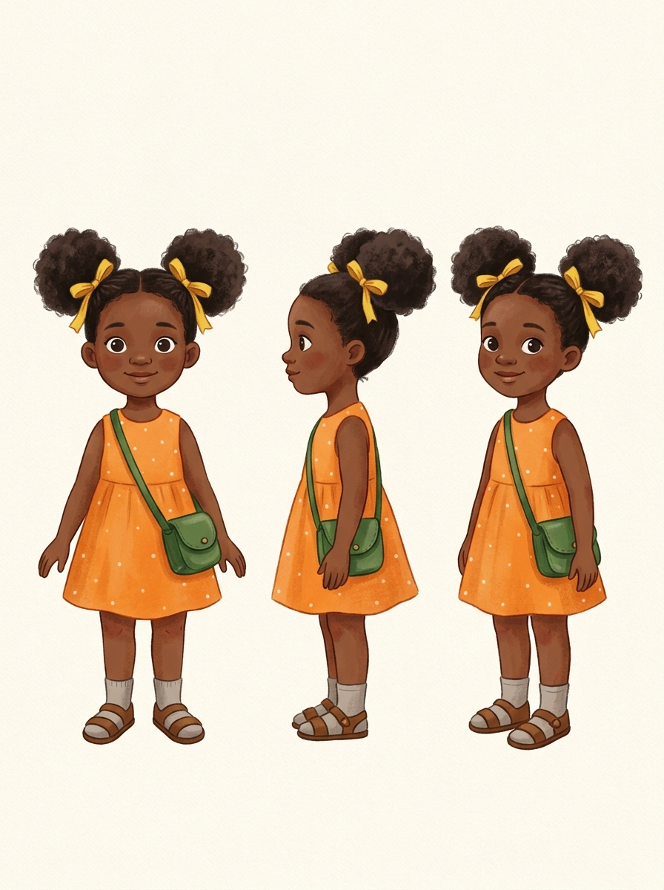
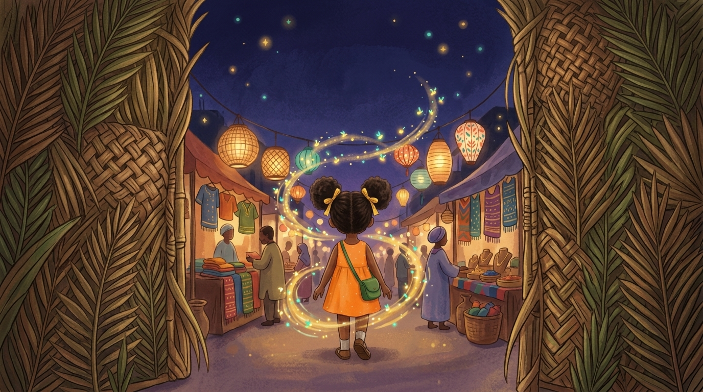
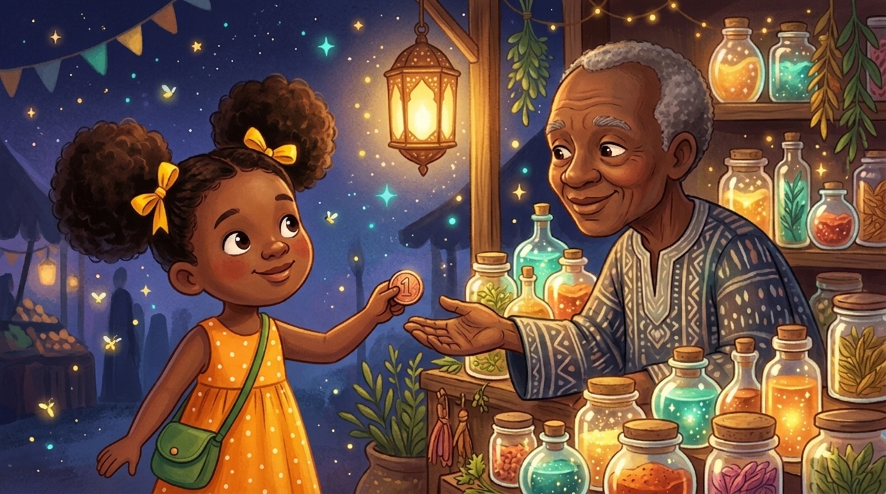

Practice project, original story. This is an uncommissioned concept. The illustrations were generated with AI (Gemini 3.6) and directed by me through written prompts.
Ada and the Night Market of Fireflies
A picture-book concept: a girl follows fireflies into a hidden night market where every stall sells something magical.
Overview
I wrote the story idea and directed the visuals: a book cover and two scenes, all built around one character and one art style. The aim was to show that I can turn a story into scenes that look like they belong to the same book.
Objective
Create a cover that makes a child want to open the book, and scenes that carry the story forward.
Target audience
Children aged 4 to 8, and the parents who choose their books.
Visual style
Soft gouache and watercolour texture, warm rounded shapes, a deep indigo night sky with golden and teal glows. Cosy and whimsical.
Character: Ada

Book cover

Scene 1: The entrance

Scene 2: The trade

How I worked
One fixed character, one fixed style: I wrote a single description of Ada and a single art-style description, then reused both unchanged in every prompt. This keeps the character and look consistent from image to image.
Several versions of each image: I generated each image multiple times and chose the one that looked most like the same book.
What went wrong and how I fixed it: On the book cover, my first attempt put the fireflies behind Ada's head instead of spiralling around her. I fixed it by sending the prompt again with my approved Ada character sheet attached, so the tool could see exactly how she should look. On Scene 2, the first result gave Ada a different dress. I resent the prompt with the character sheet attached, but this time the stall keeper looked wrong and the background didn't match the rest of the book. For the third attempt I attached two images, the character sheet and the earlier Scene 2 version I liked, and sent the prompt again. That gave me the result you see here. The lesson was that attaching reference images, not only rewording the prompt, is what keeps a character and style consistent.
Skills demonstrated
Visual storytelling, writing clear and structured AI prompts, using reference images to keep a character and style consistent, picking the best from several outputs, and presenting the work as a case study.